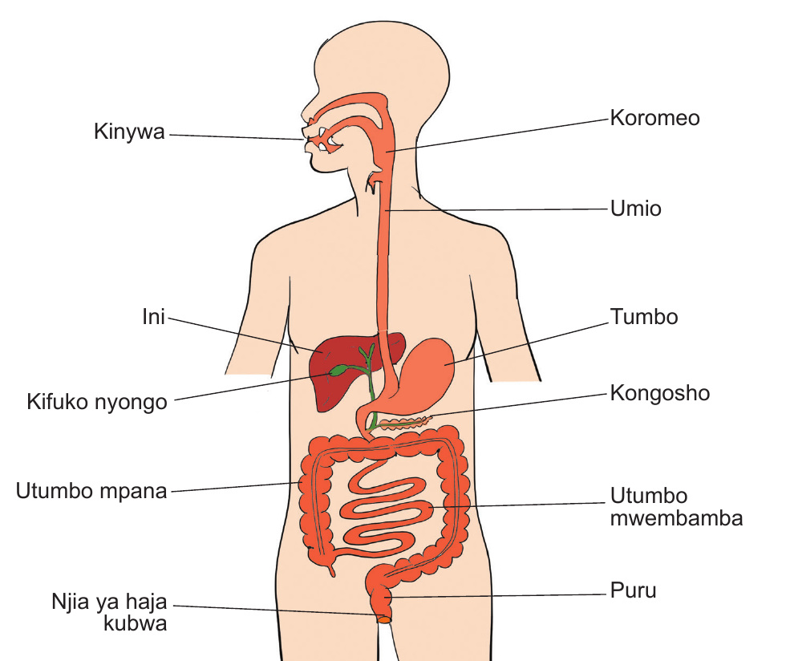

Sura ya Kumi na Mbili
Mfumo wa mmeng’enyo wa chakula
Katika Sura ya Kumi na Moja, ulijifunza kuhusu mlo kamili. Katika sura hii, utajifunza kuhusu mfumo wa mmeng’enyo wa chakula, umuhimu na kazi zake. Pia, utajifunza kasoro katika mfumo wa mmeng’enyo wa chakula na namna ya kuzuia kasoro hizo kwa kuzingatia ulaji sahihi wa chakula. Umahiri utakaoupata katika sura hii, utakuwezesha kula chakula kwa kufuata kanuni na taratibu za lishe bora.
Mwili wa binadamu umeundwa na mifumo mbalimbali. Mfumo mmojawapo ni mfumo wa kumeng’enya chakula.
Chunguza Kielelezo, kisha soma maelezo yanayofuata.

Kielelezo: Mfumo wa mmeng’enyo wa chakula wa binadamu
SAYANSI MEMKWA 2.indd 110
21/08/2021 11:22